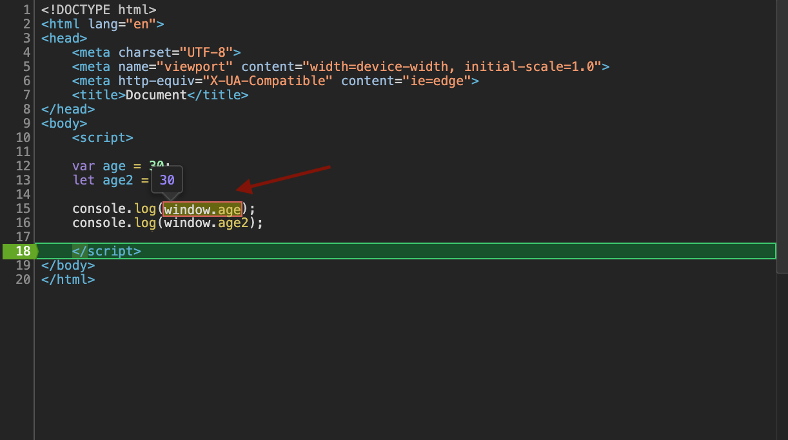
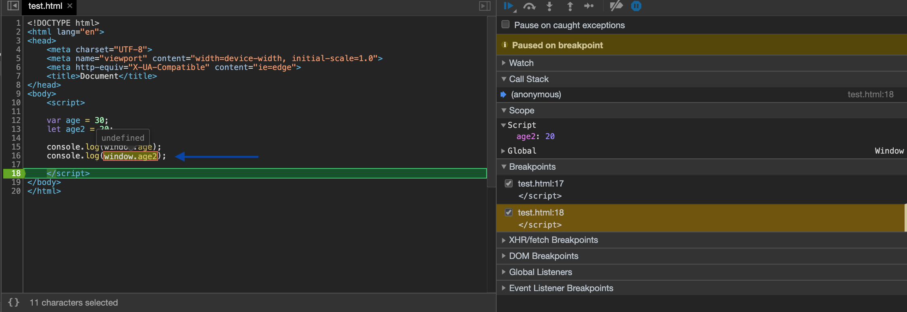
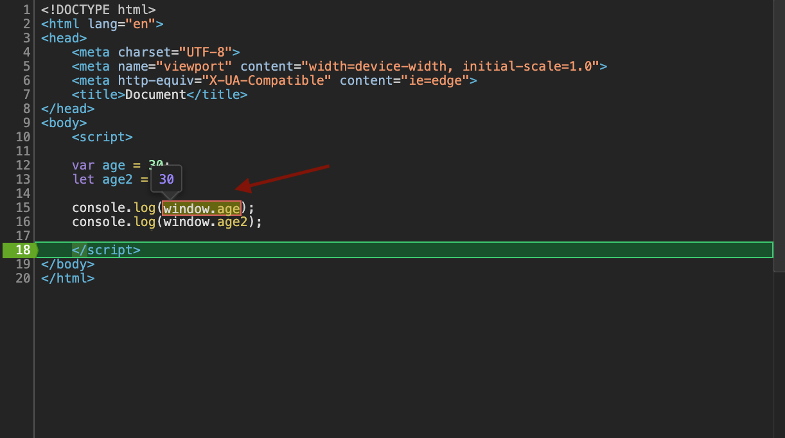
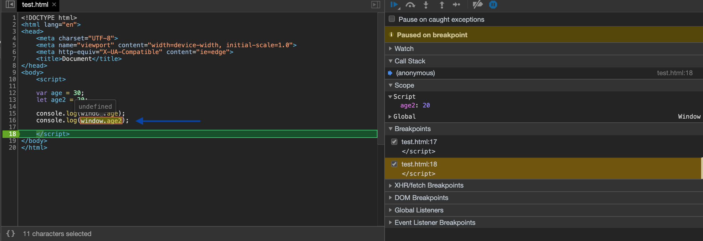

Var и глобальная область видимости
<-- назадСергей, хотел бы уточнить момент по поводу объявления переменных через var. Вы сказали на занятии, что переменные, объявленные с помощью var не являются глобальными. Не понял почему это так. Ранее при изучении всегда считал, что переменная, объявленная с помощью var будет глобальной (если только ее объявляют не в теле функции). Да и изучение различных материалов в интернете также говорит о том, что эти переменные становятся глобальными, в отличие от переменных, объявленных при помощи let. Посидел в консоли, чтобы разобраться и опять же пришел к выводу, что переменные, объявленные с помощью var находятся в глобальной области видимости.
//создаем 2 переменные
var age = 30;
let age2 = 20;
// В отладчике в хроме, в поле Scope я вижу переменную age2 (созданную через let)
// в области видимости Script - (скриншот 1)
// А переменную age в глобальной области видимости Global - (скриншот 2)
// Вывожу в консоль переменную age, обращаясь к ней через window - (скриншот 3)
console.log(window.age) // возвращает 30 (то есть она есть в объекте window)
// Вывожу в консоль переменную age2, обращаясь к ней через window - (скриншот 4)
console.log(window.age2) // возвращает undefined (то есть ее нет в объекте window)
Так все же, в итоге переменные, объявленные с помощью var - глобальные? Если нет, то почему?
Скриншоты скейлятся при наведении

 


